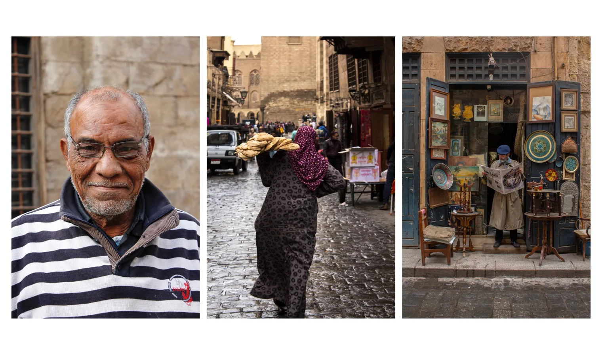

View

Documentary — Personal series
The same eye — no client, no brief.
↓ Scroll
Discipline
Photography
Documentary · Still life
Documentary · Still life
Place
Cairo, Egypt
Old city & studio
Old city & studio
Format
35mm
Ongoing
Ongoing
Why
To keep the eye
honest between jobs
honest between jobs
01 — The work
Branding is about looking closely at other people's worlds. This is where I look closely at my own.
Portraits of strangers, the choreography of a busy lane, and quiet still lifes at the end of the day — the raw material that feeds everything else.
The signature moment
The contact sheet.
Grab and drag the strip — the way you'd pull a roll across a lightbox.
02 — Selected frames